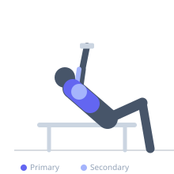
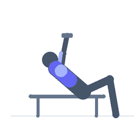

Exercise guide / Incline Dumbbell Row
Incline Dumbbell Row
The incline dumbbell row is performed lying prone on an incline bench, allowing each arm to row freely from a fully extended position. The incline angle shifts emphasis toward the upper back and rear deltoids relative to flat or horizontal rows, while the bench support reduces lower back fatigue and allows higher quality reps later in a training session.
Primary muscles
latissimus dorsi
rhomboid major
Secondary muscles
trapezius middle
deltoid posterior
brachialis
Stabilizers
erector spinae
Equipment
Dumbbell (Fixed)
Adjustable Bench (Incline / Decline)


Starting position
- Set a bench to a low incline of approximately 30 degrees. Lie prone on the bench with the chest supported and feet on the floor. Hold a dumbbell in each hand with arms hanging below the bench.
Setup
- Set the adjustable bench to a 30-degree incline. Use lighter dumbbells than you would use for a bent-over row since the range of motion is longer from this position.
Steps
- Step 1: Begin with arms hanging straight down, fully extended.
- Step 2: Row both dumbbells simultaneously toward the waist by driving the elbows up and back.
- Step 3: Retract the shoulder blades at the top of the movement.
- Step 4: Lower the dumbbells slowly to full arm extension, allowing the shoulder blades to protract.
- Step 5: Repeat without letting momentum take over.
Coaching cues
- Lead with the elbows, not the hands
- Think of pulling your shoulder blades into your back pockets
Breathing
- Exhale as you row up. Inhale as you lower the dumbbells.
Range of motion
- Maximize scapular protraction at the bottom and retraction at the top.
Tempo
- 2-1-2-0 (2s pull, 1s hold, 2s lower)
Common mistakes
- Setting the bench too steep, which changes the movement pattern significantly
- Short repping at the bottom and not achieving full scapular protraction
- Internally rotating the shoulders by rowing with palms facing backward
Safety
- Keep the head neutral — do not crane the neck upward
- Ensure the bench is on a stable, non-slip surface
Training
- hypertrophy: 10–15 reps
- endurance: 15–20 reps
- hypertrophy: 3–4 sets
- endurance: 2–3 sets
- Rest: {'hypertrophy': 75, 'endurance': 45}